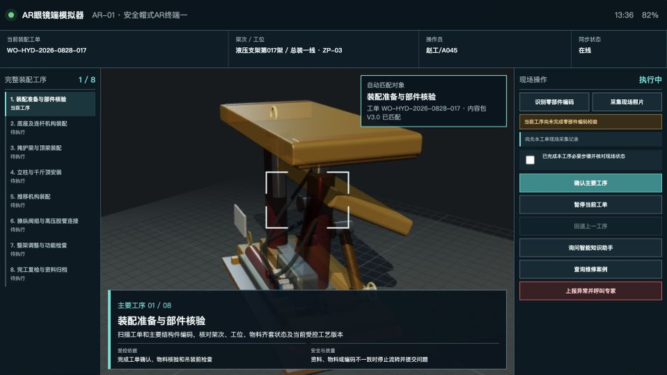

AR
AR生产现场作业支撑平台
管理端 · 液压支架完整装配过程
当前角色
工艺工程师
远程专家
系统管理员
平台在线
AR-01
从头演示
管理端运行视角 · 现场操作在AR端完成
液压支架装配运行总览
新建装配工单
打开AR端联动
客户演示主线
从装配工单开始
系统将按真实接口流转工单、现场数据、知识问答、专家协作和追溯记录。
开始演示
装配工单
0
一个架次一张工单
执行中
0
多个架次并行装配
暂停/异常
0
等待加载
在线AR终端
0
终端按工单动态绑定
并行工单监控
液压支架完整装配过程
八个主要工序
所选工单
--
--
整架装配进度
0%
下一业务动作
--
下发到AR终端
查看工单
真实数据流转
管理端与AR端业务闭环
0 条记录
所选工单动态
最近业务事件
全部记录
当前装配工单
整架装配工单执行
AR终端在线
打开AR端联动
主要工序
加载中
--

正在准备三维作业内容
首次打开时加载，后续访问使用本地缓存
--
--
下发到AR端的必要作业步骤
--
受控依据
--
安全与质量提示
--
工艺路线 · 版本 · 工序 · 作业内容 · 审核发布
工艺管理与三维作业内容
新建工艺版本
创建 · 编辑 · 发布 · 回滚
工艺版本
0个
产品型号与适用范围
工艺路线信息
顺序 · 工位 · 作业要求 · 参数 · 质量安全
主要工序与作业步骤
编辑当前工序
厂家动画拆分 · 转换 · 轻量化 · 审核发布
三维作业内容包
0个
资料上传 · 分类标签 · 审核索引 · 查询查看 · 下载使用
知识库与智能问答
上传资料
受控资料检索
当前工单智能问答
检查中
检索并显示引用
问题将携带产品型号、工艺版本和当前工序上下文。
分类与标签
知识库概况
标准、图纸、工艺卡、三维指导和经验库
知识资料管理
0条
全部分类
全部标签
查询
一对一远程专家 · 自动携带工单上下文
远程专家支持
未建立会话
接入当前请求
AR
等待接入AR眼镜
接入后将在此显示现场人员的第一视角画面
画面已冻结
等待现场呼叫
冻结画面
添加二维标注
发送作业资料
结束并归档
发送处置意见
维修管理系统工单 · 相似案例 · 现场处置 · 结果回写
智能维修辅助
形成案例并回写
业务系统来源
维修管理系统
设备档案与维修工单 →
← 处置结果与案例状态
接口正常
结合设备、部件和故障现象检索
历史维修案例与知识检索
查询相似案例
现场维修参考
选择一个案例
--
处置闭环
AR现场记录 → 审核 → 维修管理系统工单 → 知识库案例
复用产线数字孪生模型与实时数据，在AR端进行现场查看
基于数字孪生的产线透视
数据已同步
在AR端查看产线
数据与模型来源
产线数字孪生平台
产线模型、设备对象、实时参数、告警 →
内部接口已连接
孪生对象
0
产线、工位、架次与设备
执行中
0
实时装配状态
告警对象
0
可进入工单或维修处置
AR展示终端
0
查看模型、数据与告警
数字孪生对象列表
液压支架总装一线
模型 + 实时数据
AR现场查看对象
选择工位对象
AR端展示内容
产线三维模型
设备与工位状态
装配进度和运行参数
告警与维修记录
按工单、工序、设备、人员等主体查看全过程事件与现场录像
多主体过程追溯
导出追溯记录
追溯条件
--
--
按工单
按工序
按AR设备
按人员
查询
事件时间线
全部事件已同步
系统管理员工作台
终端与系统运行管理
模拟当前终端心跳
业务服务
检查中
工单、工艺、追溯
知识服务
检查中
受控检索与引用
远程协作
检查中
自建业务与媒体服务
审计记录
0
角色与写操作留痕
当前工单终端
--
--
终端能力契约
运行状态
服务与数据链路
故障恢复
备份、恢复与演示重置
创建备份
恢复最近备份
重置演示数据
尚未执行运维操作。
装配工单
新建工单
×
架次名称
产品型号
装配工位
工艺版本
目标AR终端
创建后立即下发到目标AR终端
知识资料
上传并登记资料
×
资料名称
分类
工艺标准
作业指导书
图纸与接口
培训资料
维修案例
版本
标签
适用范围
选择文件
资料内容
经工艺人员审核后发布，用于现场作业指导和知识检索。
知识资料详情
资料详情
×
工艺版本
新建工艺版本
×
版本号
基于版本
变更说明
主要工序
编辑工序
×
工序编号
工序名称
作业说明
工艺参数与质量要求
安全要求
双端实时联动 · 拖动此处移动
AR眼镜端模拟器
−
＋
_
×